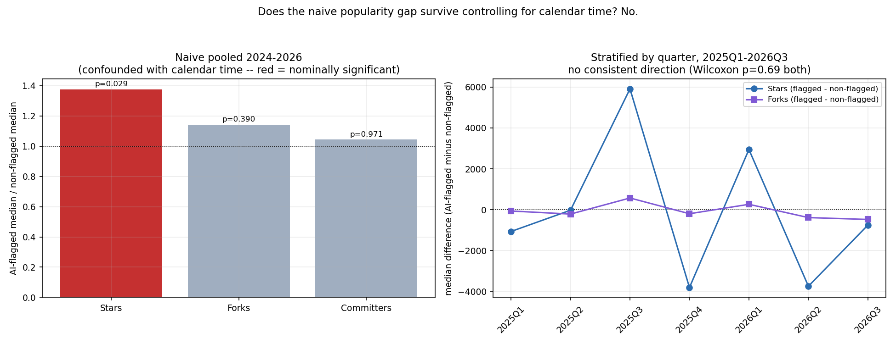
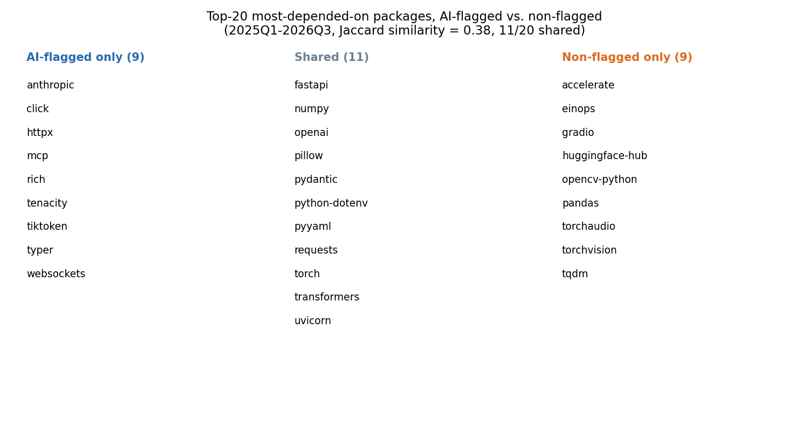

Hypothesis under test: the dependency network of fresh, AI-usage-proven packages is evolving in a different way than otherwise-comparable non-AI-flagged ones. Answer, up front: the part of this that looked true doesn't survive a basic confound check, and the part that's real isn't what the hypothesis predicted. AI-flagged packages do not depend on more-popular or more-concentrated packages than non-flagged ones once calendar time is controlled for — but they do depend on visibly different specific packages, reflecting what kind of software gets built with AI assistance right now more than how AI assistance changes dependency choice in general.
This report is a direct extension of DEPENDENCY_REPORT.md
and AI_USAGE_REPORT.md, triggered by a session
spent understanding an external academic project,
cl_ecosystem_networks (npm/PyPI/CRAN
dependency-network growth at multi-million-node scale), whose own authors
flag exactly this question — "decompose the post-2022 densification
effect by actual AI involvement" — as unfinished future work they have no
package-level ground truth to attempt. This project's AI_USAGE_REPORT.md
has exactly that ground truth, at a much smaller scale; this report is
the first attempt to point it at that question.
Reuses output/deps/edges.csv (14,832 newborn-package → dependency
edges) joined against output/ai_signal/ai_signals.csv's has_signal
flag (the same self-disclosed commit-trailer / config-file evidence from
AI_USAGE_REPORT.md — a floor on true AI-tool usage, not an estimate of
it; see that report for the full caveat). Restricted throughout to
packages born 2024 or later: self-disclosed AI usage is ~0% before
2024, so including 2014–2023 would just reproduce the calendar-time
trend already documented in DEPENDENCY_REPORT.md's time-dimension
section, not test anything about AI specifically.
A confound had to be caught and handled before anything else. Within 2024–2026, "AI-flagged" and "later quarter" are nearly the same variable: 2024Q1 has 0 of 30 packages flagged; 2026Q1 has 25 of 30. A pooled comparison across the whole window would mostly measure the already-known rising-popularity-over-time trend, not an AI effect. Two views are reported for exactly this reason:
296 packages fall in the 2024–2026 window (139 flagged, 191 non-flagged), yielding 6,064 edges.

Pooled across 2024–2026, AI-flagged packages' dependencies have a higher median star count (7,848 vs. 5,706, a 1.38× ratio) with a nominally significant Mann-Whitney p = 0.029. Read on its own, that's exactly what the hypothesis predicts and exactly the kind of number that's tempting to report as the finding.
It's a time-confound artifact. Stratified by quarter, the Wilcoxon signed-rank test on the paired differences gives p = 0.69 for stars and p = 0.69 for forks (p = 0.41 for lifetime contributors) — nowhere close to significant. More tellingly, the direction isn't even consistent: AI-flagged packages have lower median star dependencies in 5 of the 7 stratified quarters, not higher (2025Q1: −1,067; 2025Q2: −27; 2025Q4: −3,810; 2026Q2: −3,747; 2026Q3: −756 — only 2025Q3 and 2026Q1 go the other way, and by large margins that don't repeat). The naive pooled "effect" was almost entirely 2024's near-zero flagged sample and 2026's near-total flagged sample producing a spurious calendar-time correlation, not a real AI-vs-non-AI difference. Once deconfounded, there is no evidence that AI-flagged packages depend on more, less, or differently positioned popularity than comparable non-flagged packages.
Naive comparison suggested AI-flagged packages declare noticeably fewer
dependencies (median 10 vs. 13 for non-flagged). Restricted to the
same stratified 2025Q1–2026Q3 window, that gap nearly vanishes (10 vs.
9.5) — another naive signal that mostly reflects calendar time, not an
AI effect. One difference that is stable across both views: AI-flagged
packages show a higher rate of zero extractable dependencies (12.5–13.0%
vs. 8.4–9.8%). This could be a real effect (self-contained scaffolding
AI tools tend to generate) or a measurement artifact — this project's
dependency parser only reads literal install_requires lists,
pyproject.toml tables, and requirements.txt (see DEPENDENCY_REPORT.md's
method section); if AI-generated manifests favor a declaration pattern
this parser doesn't handle, that would show up as a false zero. Not
resolved here.

Comparing the 20 most-depended-on packages in each group (stratified
window), the overlap is moderate — Jaccard similarity 0.38, 11 of 20
shared — but the non-overlapping halves tell a clear, coherent story.
AI-flagged-only: anthropic, mcp (the Model Context Protocol),
tiktoken, plus click, typer, rich, httpx, websockets,
tenacity — an LLM-agent-and-API-client-tooling cluster: the SDKs and
CLI/networking scaffolding you'd reach for building an AI agent or
wrapping an API. Non-flagged-only: accelerate, einops, gradio,
huggingface-hub, opencv-python, pandas, torchaudio,
torchvision — a classic ML-research-and-computer-vision cluster: the
PyTorch/HuggingFace ecosystem for training and evaluating models. The
shared middle ground (numpy, torch, transformers, fastapi,
pydantic, requests, uvicorn, openai) is the common infrastructure
both kinds of project need regardless of how they were written.
This is a compositional difference, not a structural one, and the distinction matters for how to read the whole report. The original hypothesis was framed as the dependency network evolving differently — implying something about graph shape, concentration, or growth dynamics. What this data actually shows is that AI-flagged and non-flagged packages tend to be different kinds of software (agent/API tooling vs. ML/CV research tooling), each pulling in the ecosystem-standard dependencies for its own kind — not that AI authorship changes how a comparable piece of software picks its dependencies. That's a real, interesting finding, but it's a different claim than the one under test, and this report is explicit about not overstating it as confirmation of the original hypothesis.
A specific, unresolved confound worth naming directly: a package
being AI-flagged and a package being LLM/agent-topic software are
plausibly the same underlying thing wearing two hats — someone building
an agent framework today is more likely to reach for Claude Code and
more likely to import anthropic/mcp. This report cannot separate "AI
tools cause agent-flavored dependency choices" from "people building
agent-flavored software right now also happen to be the people using AI
coding tools right now" — both produce the same observed pattern, and
untangling them would need a control group of AI-flagged non-agent
software, which this sample doesn't have enough of.
cl_ecosystem_networks (a separate academic project, local at
~/Documents_alt/Research/cl_ecosystem_networks/, not part of this
project and explored read-only) studies npm/PyPI/CRAN dependency-network
growth from
2000–2026 using ecosyste.ms's full bulk data release — multiple orders
of magnitude larger than this project's sample, with three formal
generative network models fitted against an empirical densification
finding (edge count growing faster than node count). Their own pipeline
already ran a structural-break test for the ChatGPT release date on the
whole-ecosystem densification curve (Chow test, ai_breakpoint_analysis.py):
npm shows a large but fragile break (p = 0.0001 at that specific date,
but not independently found by an unconstrained break search), PyPI
shows a clean null, CRAN's result contradicts its own decelerating
release cadence. Their own written synthesis names, as unattempted future
work, exactly this report's question — separating packages with genuine
AI involvement from the rest of the post-2022 aggregate signal — because
they have no package-level ground truth for which packages that is.
This report is a first, small-scale attempt at that decomposition, and the honest result is a null on the structural/popularity axis their model-fitting apparatus would care about most, plus a real compositional signal their aggregate curves can't see at all. Two things worth stating plainly about scale: this project's 139 AI-flagged packages are two to three orders of magnitude smaller than what their sup-F/Chow/copying-model machinery was built and validated on — not enough to refit their formal models or rerun a proper break search on an AI-flagged sub-network — and this project's single-snapshot-per-package design has no longitudinal per-package edge history, which their data does. A genuine next step (unattempted here) would use their full population of newborn PyPI packages by quarter — removing this project's GitHub-star sampling bias entirely — as the base population for this project's AI-signal scan, which is the point where each project's respective weak spot gets fixed by the other's data.
has_signal is the same floor-not-estimate measure from
AI_USAGE_REPORT.md. False negatives (real AI usage with no visible
trace) are expected to be common; this report inherits that limitation
fully.output/deps/analysis_ai_comparison/*.csvoutput/deps/analysis_ai_comparison/top20_overlap.jsonoutput/deps/charts_ai_comparison/python3 src/ai_dependency_comparison.py && python3
src/ai_dependency_comparison_charts.py (requires output/deps/edges.csv,
output/deps/dependency_popularity.csv, and output/ai_signal/ai_signals.csv
from the earlier studies)